Workshop Manual ➭ BODY & ACCESSORIES ➭ EXTERIOR TRIM ➭ CONVERTIBLE TOP DISASSEMBLY/ASSEMBLY
CONVERTIBLE TOP DISASSEMBLY/ASSEMBLY
id091600807800
{: #wp1059778}
-
Disassemble in the order indicated in the table.
-
To remove the striker, remove the following parts:
(1) Female wedge (See CONVERTIBLE TOP DISASSEMBLY/ASSEMBLY.) {: #wp1059798}(2) Map light (See MAP LIGHT REMOVAL/INSTALLATION.) {: #wp1059816}(3) A-pillar trim (See A-PILLAR TRIM REMOVAL/INSTALLATION.) {: #wp1059834}(4) Front header trim (See FRONT HEADER TRIM REMOVAL/INSTALLATION.)
- Assemble in the reverse order of disassembly.
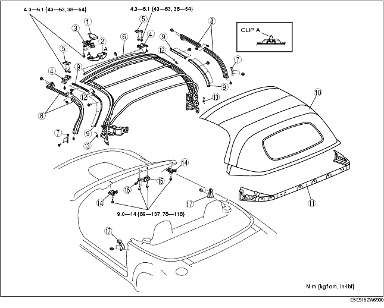
|
Top lock lever cover {: #wp1059912} |
|
|---|---|
|
2 {: #wp1059950} |
Top lock cover {: #wp1059953} |
|
3 {: #wp1059957} |
Top lock {: #wp1059960} |
|
4 {: #wp1059994} |
male wedge cover {: #wp1059997} |
|
5 {: #wp1060011} |
male wedge {: #wp1060014} |
|
6 {: #wp1060028} |
set plate {: #wp1060031} |
|
7 {: #wp1060045} |
Slider {: #wp1060048} |
|
8 {: #wp1060062} |
Weatherstrip {: #wp1060065} |
|
9 {: #wp1060079} |
Retainer {: #wp1060082} (See Retainer Disassembly Note.) {: #wp1060098} (See Retainer Assembly Note.) {: #wp1060112} |
|
10 {: #wp1060124} |
Top fabric {: #wp1060127} (See Top Fabric Disassembly Note.) {: #wp1060147} (See Top Fabric Assembly Note.) {: #wp1060161} |
|
11 {: #wp1060173} |
Rain rail {: #wp1060176} (See Rain Rail Disassembly Note.) {: #wp1060200} (See Rain Rail Assembly Note.) {: #wp1060214} |
|
12 {: #wp1060226} |
Spring A {: #wp1060229} (See Spring A Disassembly Note.) {: #wp1060257} |
|
13 {: #wp1060269} |
Spring B {: #wp1060272} (See Spring B Disassembly Note.) {: #wp1060302} |
|
14 {: #wp1060314} |
Female wedge {: #wp1060317} |
|
15 {: #wp1060347} |
Striker {: #wp1060350} |
|
16 {: #wp1060380} |
Connector {: #wp1060383} |
|
17 {: #wp1060413} |
Cab-side weatherstrip {: #wp1060416} |
Retainer Disassembly Note
- Mark around the retainer installation screws with paint before removing them.{: #wp1060491}
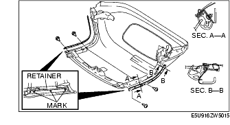
Top Fabric Disassembly Note
- Remove the top fabric from the front bow retainer.{: #wp1060528}
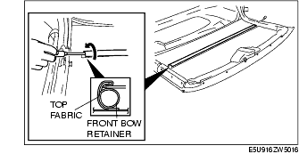
- Pull out the top fabric from the front header.{: #wp1060555}
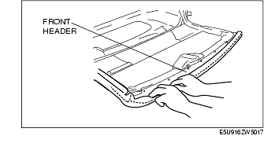
- Remove the covers.{: #wp1060582}
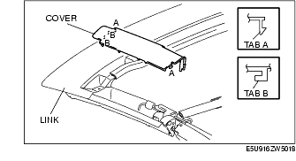
- Remove the cable installation rivet using a drill.{: #wp1060609}
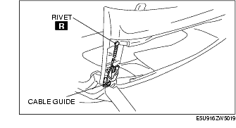
-
Remove the cables from the cable guide.
-
Remove the band installation rivet using a drill.{: #wp1060656}
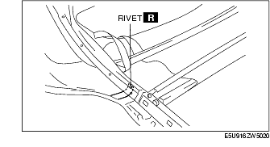
- Remove the nut, then remove the cable end bracket.{: #wp1060683}
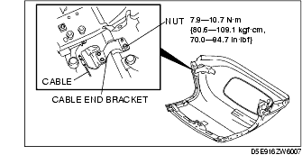
Rain Rail Disassembly Note
- Remove the rivets from the top fabric using a drill.
Spring A Disassembly Note
- Remove the bolt.{: #wp1060740}
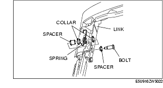
- Remove the spacers, spring and collars from the link.
Spring B Disassembly Note
- Remove the bolt.{: #wp1060787}
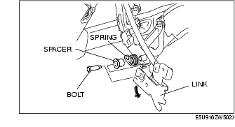
- Pull the link in the direction of the arrow to remove the spacer and spring.
Rain Rail Assembly Note
-
Degrease the rain rail using white gasoline.
-
Install the insulation tape to the rivet installation hole of the rain rail.
-
Secure the top fabric and rain rail with the rivet.{: #wp1060854}
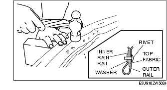
- Flatten the stem using hammer.
Top Fabric Assembly Note
-
Place the link onto the top fabric.
-
Align the link with the set plate installation hole of the top fabric, and install the top fabric to the front header.{: #wp1060911}
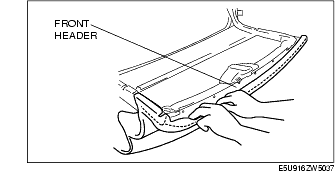
- Thread the cable into the cable guide.{: #wp1060938}
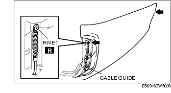
-
Set the aluminum rivet to the riveter, and then secure the cable to the link with the rivet.
-
Install the covers.{: #wp1060975}
- Install the top fabric to the front bow.{: #wp1061002}
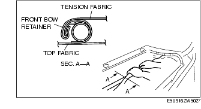
- Secure the top fabric to the front bow retainer using a rubber hammer.{: #wp1061029}
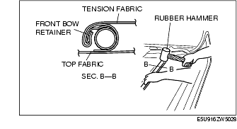
- Set the aluminum rivet to the riveter, and then secure the band to the link with the rivet.{: #wp1061056}
- Install the cable end bracket.{: #wp1061083}
Retainer Assembly Note
- Install the retainers to the link, aligning the retainer marks with the retainer installation screws.{: #wp1061120}